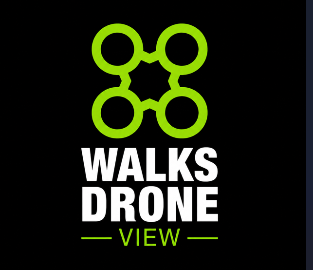

Racha-Cuca
Walks
Quebra-cabeça de fotos • 80 fases em 2 pastas de 40
🪙 Moedas:
0
🏆 Fase:
1
/80
⭐ Recorde:
—
Fase 1 — Logo Walks
Grade 3 × 3 • Arraste ou toque em duas peças
01:00
Monte a imagem antes que o tempo acabe!
👁 Ver foto
💡 Dica (10 🪙)
⏱ Repor até 1 minuto (20 🪙)
↻ Reiniciar fase